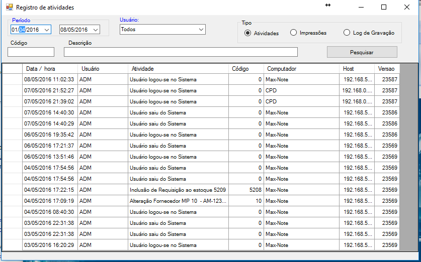

Cadastro de Usuários
Cadastro de Usuários
O programa Maxcontrol oferece um formulário de cadastro de usuarios, com pleno controle de niveis e permiçoes.
Log de atividade de usários

log de usuário é uma visão geral de todas as atividades do usuarios,